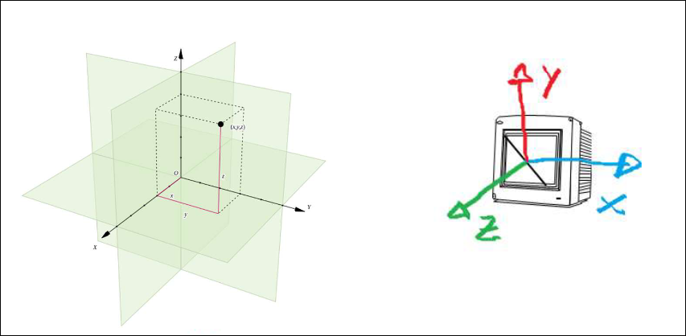
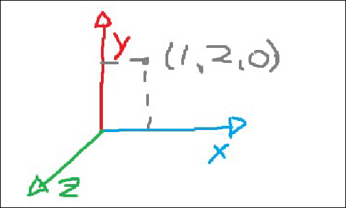
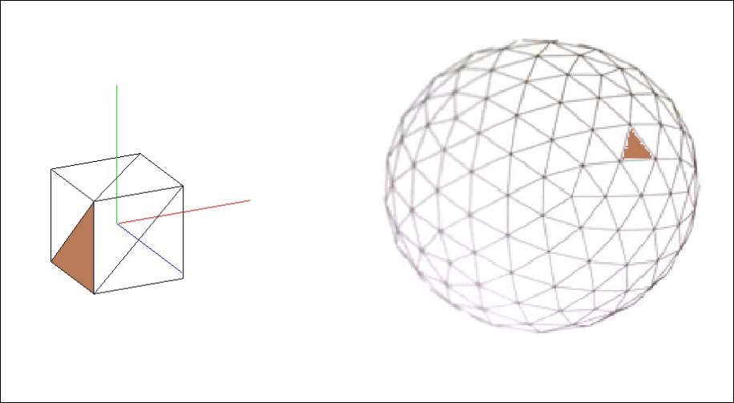
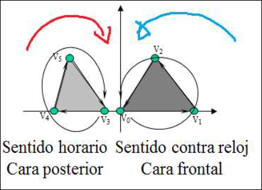
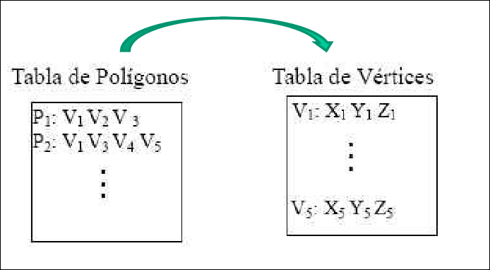
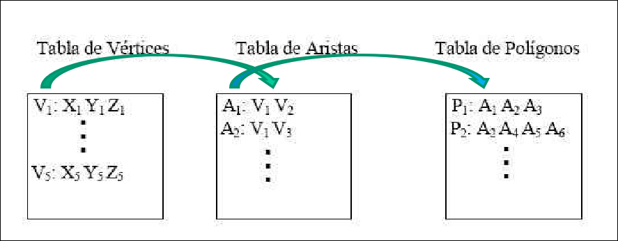

Modelado
2.1 Objetos Sólidos
Modelar un objeto es darle forma. Existen dos tipos de modelado:
- Modelado de interior: se suelen emplear representaciones basadas en Spatial-Partitioning que consiste en describir el interior de un objeto diviendolo en regiones pequeñas sólidas que no se solapan entre sí. Por lo general se usan cubos (marching cubes)
- Modelado de Exterior o Representación de Superficie: define el contorno del objeto sin hacer referencia a su volumen interior. Proporciona información sobre:
- Superficie: debe tener en cuenta su geometría
- Propiedades visuales: cómo se comporta el color o la textura frente a la luz
- Alguna propiedad física (como la elasticicidad). Si va a efectuar una simulación física sobre el objeto.
En la re representación de objetos 3D las superficies representadas deben ser cerradas.
2.2 Ejes, Puntos y Vectores
Tanto los puntos, como los vectores y los objetos, se representarán sobre los tres ejes cartesianos.
, anchura , altura , profundidad
Por defecto, el rango de valores de las coordenadas va desde (-1,-1,-1) a (1,1,1).


2.3 Triangulación
Para modelar cualquier objeto se emplea la técnica de teselación, que consiste en su representación mediante polígonos. Por lo general, se suele usar el triángulo, por lo que se llama triangulación.

2.4 Identificación de Caras
Un plano se puede definir por su vector normal, que se puede calcular mediante el producto vectorial de dos de sus vectores. Si simplemente se desea conocer la dirección del vector normal, basta aplicar la regla de la mano derecha según el recorrido de los vértices. Si se recorren en sentido antihorario la normal será positiva, en caso contrario, será negativa

Calcular Vectores entre 2 puntos
El producto vectorial
Dados los vectores:
Calculamos el producto cruz:
La normal se puede especificar para un conjunto de vértices con glNormal3f(x,y,z) o glNormal3fv(*v).
En OpenGl se usa FACE CULLING, es decir sólo se visualizan las superficies cuya normal se dirige hacia la cámara. Por tanto hay que tener en cuenta el orden de creación de los vértices.
Está desactivado por defecto, pero esto se puede cambiar con glEnable(GL_CULL_FACE) y glDisable(GL_CULL_FACE)
Por defecto, se visualizarán las caras frontales (lo que se puede especificar con glFrontFace(GL_CCW) pero se puede desactivar con glFrontFace(GL_CW).
Un vector normal se puede normalizar (es decir, transformar en un vector unitario) diviendo cada una de sus componentes por su módulo. Esto es útil para procesos de iluminación de objetos, por lo que conviene activas la normalización automática con glEnable(GL_NORMALIZE).
2.5 Tablas de Representación
Para la representación de un objeto en base a polígonos necesitamos conocer, representar y almacenar sus vértices y atributos en tablas. Tipos de tablas:
- Geométricas: almacenan información sobre los vértices y parámetros sobre los polígonos o superficie que determinan.
- De atributos: almacenan información sobre las propiedades físicas de los polígonos (textura, color, transparencia, etc.)
Tipos de tablas según sus índices:
- Sin indexar
- Indexada: hay una tabla para los vértices (con 3 coordenadas para cada uno) y otro para los polígonos (con los vértices que definen cada uno). Si un vértice se usa varias veces, se escribe una única vez en la tabla de vértices y se puede referenciarse varias veces en la de polígonos.

- Doblemente indexada: hay una tabla para los vértices (con 3 coordenadas para cada uno), otra para las aristas (con dos vértices para cada una y si se desea los dos polígonos que la comparte) y otra para los polígonos (con las aristas de cada uno).
